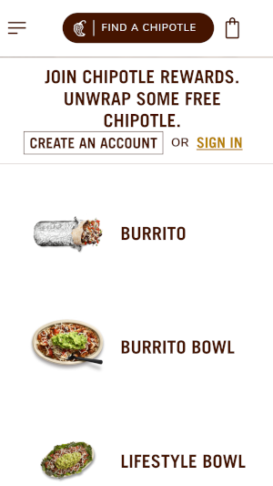
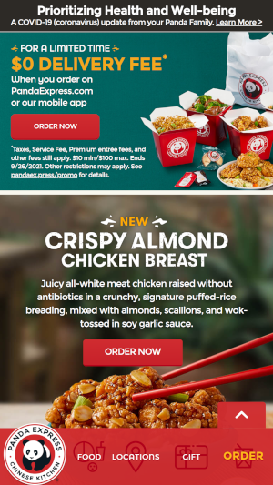
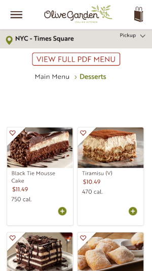

White Space and Clean Design
Chipotle
chipotle.com
Chipotle is a great example of using white space and having a clean design. Having the little icons/pictures and the name of each option available makes it very appealing to the eye and easy to navigate. It brings the users focus onto to the menu options rather than having a busy background or more pictures to distract the user.
Fitt's Law
Panda Express
pandaexpress.com
Panda Express has the menu bar stagnant at the bottom of the page which makes it very easy to navigate and the user will have all the options needed right infront of them always. That way the user will not have to search for them either all the way at the top of the page or clicking the hamburger menu which is very common for mobile designs.
PARC: Proximity
Olive Garden
olivegarden.com
Olive Garden displays its food menu options in little outlined boxes with a picture of the food and a little description of the food. In doing this it creates no confusion on what food description belongs to the picture of the food. That way the user can choose what option they want because it is designed in a clean organized way that our brain can easily group each food option together.